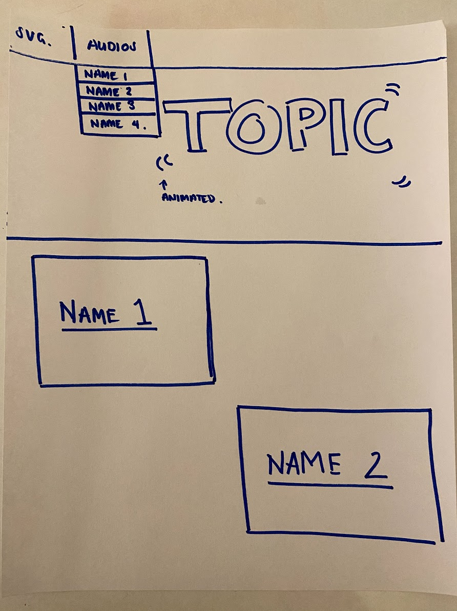
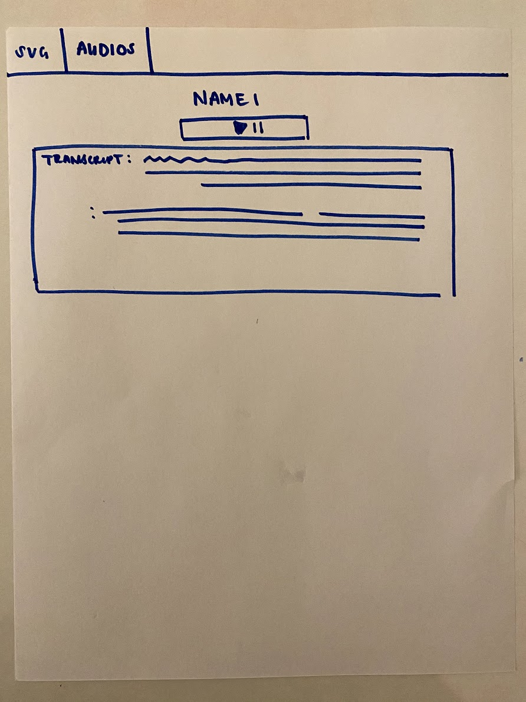

This webpage is meant to document opinions and stories provided by some of my friends. I will have interviews/ conversations with my colleagues either about a set topic or anything they want to talk about and record it. This project is intended to transcript individuals’ present thoughts.
Personally, I have always been interested in others perspectives. What they have been through, what they believe, and why. Every time that I have a problem and I ask a friend for guidance it comes from experiences. It comes from stories that they have witnessed or been a part of. And although they may not share those stories with me entirely, their wisdom and feelings still make an impact. Every time they have a problem it forces me to self-reflect to be able to respond accordingly. Like most people, I think that the people I have surrounded myself with help me grow. My friends and family make me into a better person. And it makes us closer. There’s this kind of intimacy that comes from conversations, even when we aren’t in them. Now especially that we have been quarantined for so long I’ve realized how much hearing people’s voices mean. In a way this project is to hoard some of those moments but I think it would be really cool to look back in a couple years and listen to how they saw things.
I plan on recording these conversations on my phone and transferring the audio to my laptop. I’m still not completely sure on the topics themselves. I’ve thought about having everyone do the same topic and questions so we can compare what people have to say. But I have also thought about giving everyone a different topic which might be more interesting. I also don’t know how long I want them to be or if I even want my voice to be in it. Both of these factors could elevate or reduce the intimacy of the audio and I’m debating how exposed I want the site to be. Depending on how much I leave in I think it would give the webpage a different feeling. But there’s also a dilemma with design. Just having audio is boring and I am considering adding an interactive SVG where an item from each recording can be hovered over to animate. However, this sounds like a lot of work and I might end up doing one large word or item instead. I’m also considering making sort of transcripts or quotes for the audio. Not vtt because having to time the words correctly to match he audio is just frustrating. But I feel like the audio needs a more visual aspect to it but I don’t want to add photos. I think if I add a photo it might take away from the audio or create assumptions if it’s a picture of the person speaking.
For the process I have a couple different ideas. I could either give a lot of people, like 5, a couple topics to talk about but keep their responses under a minute. So I might ask them about loss, gentrification, and love, tell them to give me a quick response and I’ll have 15 minute of responses in total. 3 audios from each person. This wouldn’t be as intimate and not as much as a conversation as it is an interview but its advantage is having a lot of varying topics and perspectives. Another way I was thinking of doing this was maybe just focusing on one topic and depending on how long I want the conversations to be Ill choose a number of people. So if I want the audio to be 10 minutes each maybe I’ll just talk to 2 or 3 people but if its 5 minutes each maybe 4 people. I just realized that that it would take forever for a 10-minute audio to load so maybe 5 minutes will be the limit. I’m also contemplating on if it should just be my friends or maybe I’ll ask a random person online or my family. As you can see, there’s a lot I am unsure about.
The intended audience is me or I guess anyone that wants to be nosey or is lonely. Maybe it can be background noise or used to spark new viewpoints. But it’s really just a documentation on my friends and our. But I think it would be a cute project to even include some people that I don’t know.
or
 